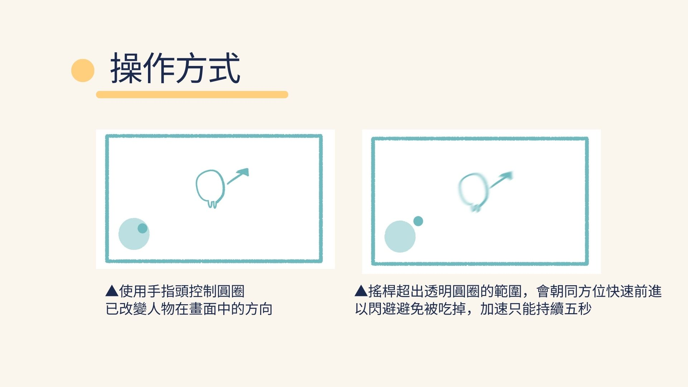
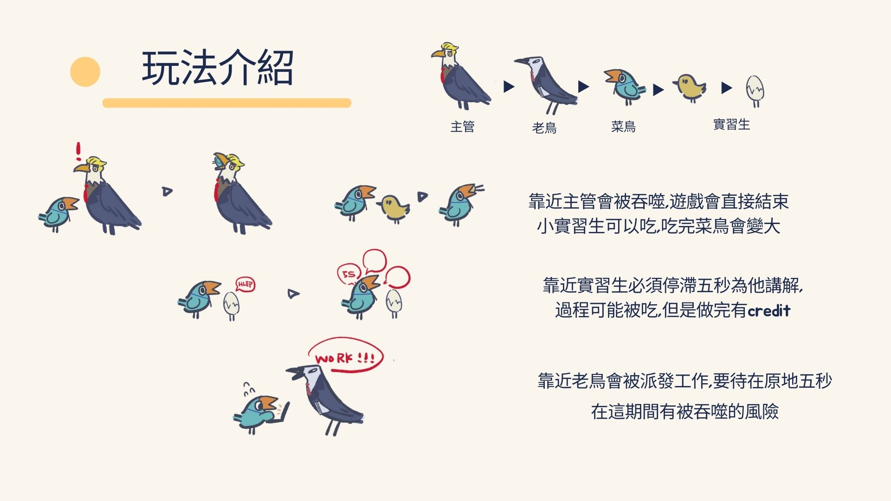
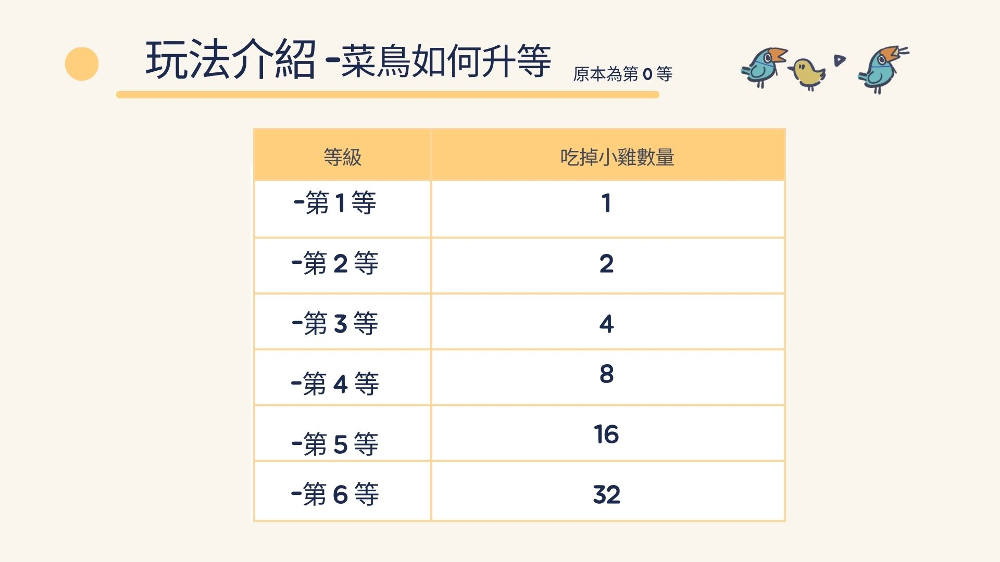
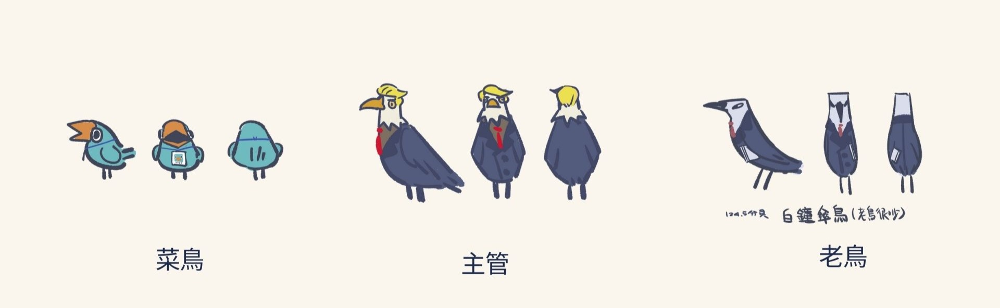
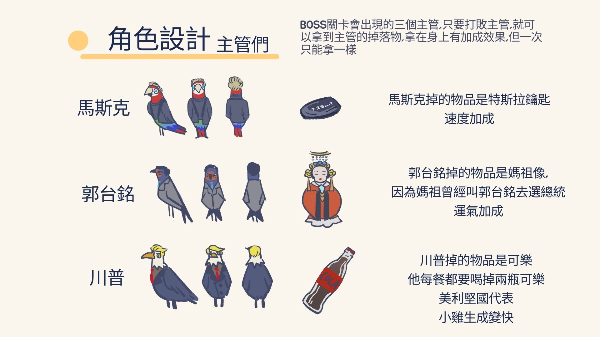
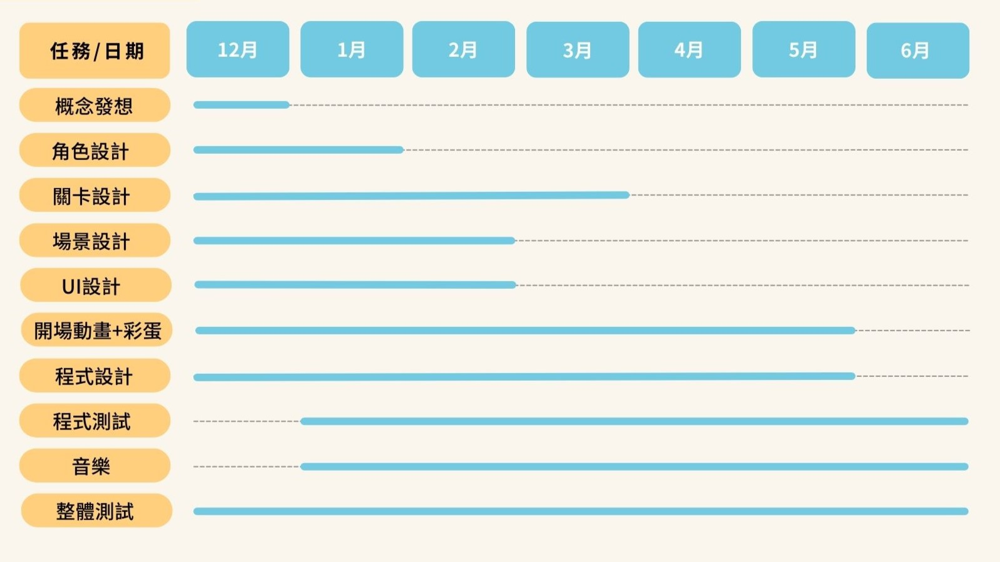

|
遊戲名稱 NOVICE(菜鳥)
設計概念:畫面以簡潔可愛為主，logo造型直接把菜鳥形象化。
| 目錄 |
|
故事大綱
玩法說明
遊戲流程
角色設定 宣傳影片
展場設計
團隊分工
甘特圖 |
故事大綱
職場環境是非常冷酷的，有著人吃人的文化，主角職場小菜鳥，必須穿梭在辦公室內，並且生存到最後，以打敗現在的體制。
回目錄 |
玩法說明



回目錄 |
角色設定


對應道具具有不同的彩蛋動畫，需要透過彩蛋關卡進行解鎖。
回目錄 |
宣傳影片
小組宣傳片
回目錄
|
展場設計
回目錄 |
團隊分工
概念發想:郭娘伊
蔡雨岑
黃宥寧
林承佑
彭泯宸
陳櫟任
戴妘倩
關卡設計:郭娘伊
蔡雨岑
黃宥寧
林承佑
彭泯宸
陳櫟任
戴妘倩
角色設計:蔡雨岑
場景設計:郭娘伊
蔡雨岑
小組宣傳片:
開頭動畫:黃宥寧
職場小故事及彩蛋動畫:郭娘伊
蔡雨岑 黃宥寧
UI設計:郭娘伊
彭泯宸
程式設計:林承佑
彭泯宸
陳櫟任
音樂:彭泯宸
展場/海報設計:蔡雨岑
回目錄 |
甘特圖

回目錄 |
|